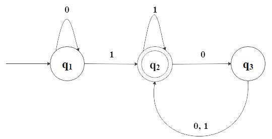

Automata Theory
Automata theory is a foundational area of theoretical computer science and discrete mathematics that studies abstract
machines and computational problems. It provides a rigorous framework for understanding formal languages, state-based
computation, and algorithmic processes. For instance, automata theory is essential in compiler design, natural language processing,
software verification, and the study of complexity classes in computational theory. By exploring automata theory, we
will develop a deeper understanding of computation, logic, and the mathematical principles governing algorithmic processes.
Finite automatons & Regular Langualges
A a finite automaton is a 5-tuple \((Q, \Sigma, \delta, q_0, F)\) where
- \(Q\) is a finite set called the states
- \(\Sigma\) is a finite set called the alphabet
- \(\delta: Q \times \Sigma \to Q\) is the transition function
- \(q_0 \in Q\) is the start state
- \(F \subseteq Q\) is the set of accept states
Let \(A\) be the set of all strings that machine \(M\) accepts. We say that \(A\) is the language of
machine \(M\) and write:
\[
L(M) = A
\]
We also say that \(M\) recognizes \(A\).

Moreover, a language is called a regular language if some finite automaton recognizes it.
Let \(A\) and \(B\) be languages. The regular operations ared defined as follows:
- Union:
\(A \cup B = \{x | x \in A \text{or } x \in B\}\)
- Concatenation:
\(A \circ B = \{xy | x \in A \text{and } y \in B\}\)
- Star:
\(A^* = \{x_1x_2 \cdots x_k | k \geq 0 \text{and each } x_i \in A\}\)
Back to Home
Back to Discrete Mathematics & Algorithms